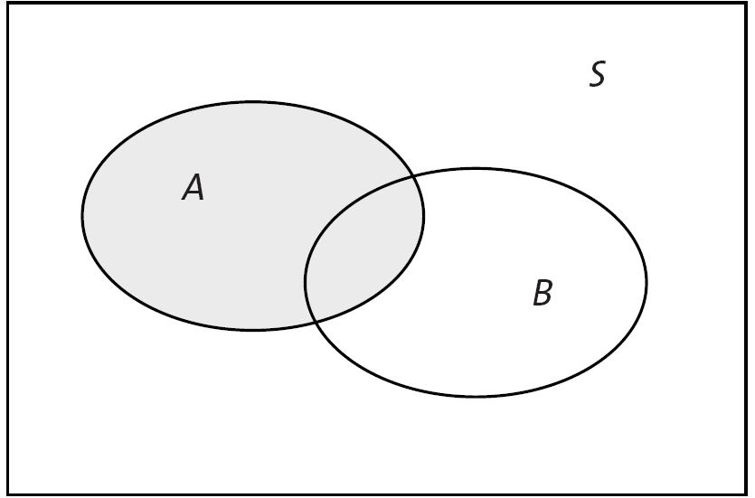

3 Probability
Topics:
- Probability concepts
- Probability calculation
- Conditional and total probability
- Bayes’ theorem
- Diagnostic testing, sensitivity, specificity, positive and negative predictive value
Books and resources:
- Aalen 3.1-3.7
- Kirkwood and Sterne 14
3.1 Basic concepts
Probability expresses a potential for something to happen.
It corresponds to the concept of risk in medicine
It is an assessment of uncertainty in a situation or event
3.1.1 Brief history
Blaise Pascal (17th century): founder of probabiliy theory. Motivated by dice and card games
Andrey Kolmogorov (1933): formulated the rules
3.1.2 Bayesian and frequentist probability
Bayesian definition: Degree of belief that some event will occur
Frequentis definition: Proportions of times that some event occurred in a large number of similar repeated trials
Why there would be the two schools, key difference, and why we focus on frequentist
3.1.3 Law of Large Numbers
Frequency of an event is the proportion of times that the event does occur - interpreted as a probability
LLN: As an experiment is repeated over and over, the observed frequency approaches the actual probability (true probability). Probability as limit of frequency
Check the example (Child birth)
How frequency is linked to LLN. ‘True probability’
Child birth example
Coin tossing
3.2 Probability calculation
3.2.1 Events and sample space, stochastic trial
- (what is)
- uncertain oucome
All possible outcomes make up the sample space, where each outcome has a probability of occurrrence
The sum of all probabilities in the sample space equals 1
An event is a single outcome (or a collection of outcomes??)
This section need to be better explained
Dice tossing
Child birth
Diastolic blood pressure
3.2.2 Venn diagram
Often used to illustrate events and sample space

A and B are events, S is the sample space
Operators on events
- Union: \(A \cup B\)
- Intersection: \(A \cap B\)
- Combining operators: \(A \cap \bar{B}\)
3.2.3 Calculation rules
The probability of event A is denoted by \(P(A)\). It is between 0 and 1
The probability over the whole sample space equals 1
Complement rule
\[P(A) + P(\bar{A}) = 1\]
Additive rule
The occurrence of at least one of the events A or B is \[P(A \cup B) = P(A) + P(B) - P(A \cap B)\] For disjunct events A, B, \(P(A \cap B) = 0\). Hence \[P(A \cup B) = P(A) + P(B)\]
Multiplicative rule
Probability of independent events can be multiplied
\[P(A \cap B) = P(A) \times P(B)\] Examples: gender of the child in 2 births, throw of 2 dices
Child birth
Dice tossing
3.3 Conditional probability
What is the probability of getting an outcome A given that it will at least occur in B? \(P(A|B)\)
Rescale the probability of events in B: such that the new sample space has probability 1, then
\[\frac{P(A \cap B)}{P(B)}\]
weather forecast
3.3.1 Stochastic independence
A and B are independent if
\[P(A|B) = P(A)\] Interpretation: probability of A is the same if we also know B occurs
Appendicitis
Influenza
Calculations can be simplified if there is stochastic independence
Child birth (revisited)
Dice (revisited)
3.4 Total probability, Bayes’ theorem
Motivation for this section
Gender of twins
3.5 Diagnostic testing
3.5.1 Concepts
Sensitivity
Specificity
Positive predictive value
Negative predictive value
Mammography
HIV testing
ELISA test
3.5.2 Computation of PPV, NPV and prevalence
Application of Bayes’ theorem
HIV testing (revisited)